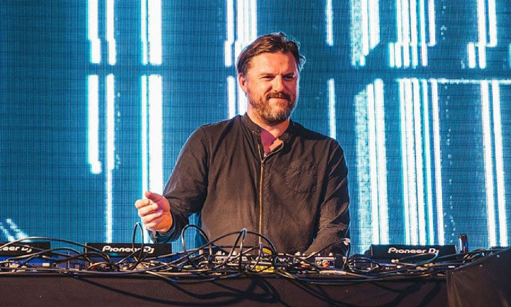

Младен Соломун

Младен Соломун (англ. Mladen Solomun, 27 грудня 1975, Травнік, Боснія і Герцеговина), більше відомий на світовій сцені як Solomun, є боснійсько-німецьким діджеєм та музикальним продюсером. Виріс в Гамбурзі. Тричі перемагав в 2012 році на DJ Winner Awards як Найкращий продюсер, діджей, та діп-хауз діджей.